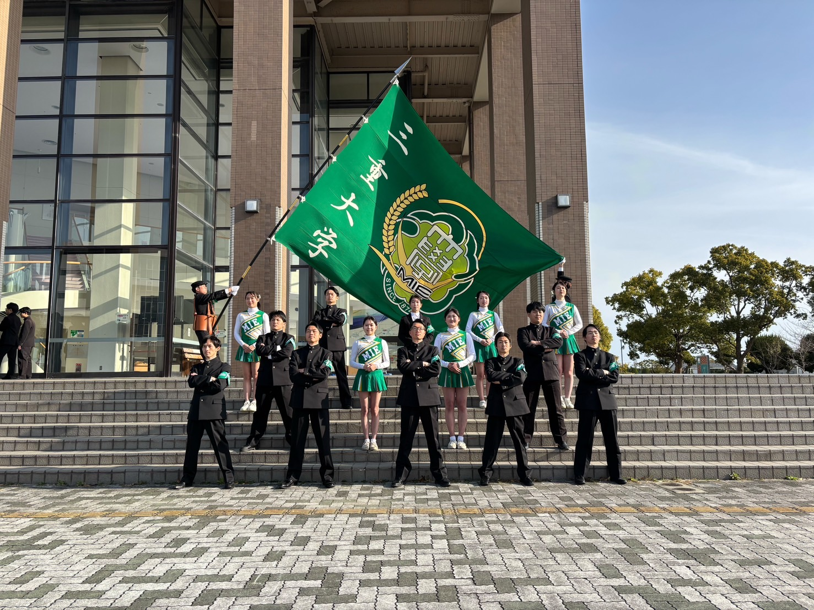
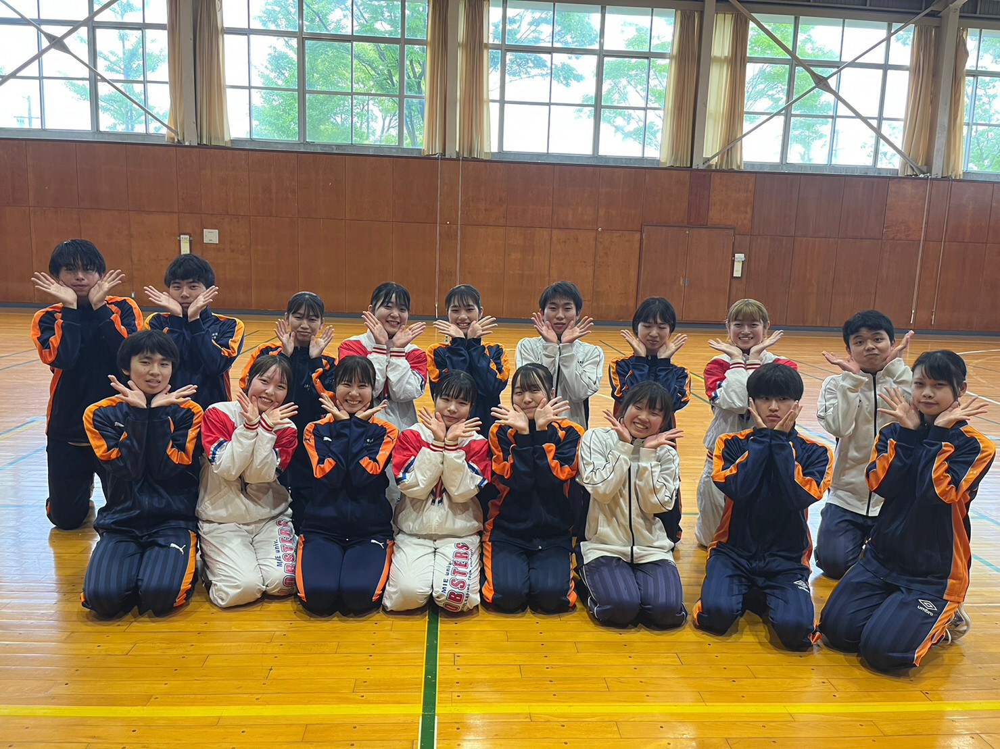
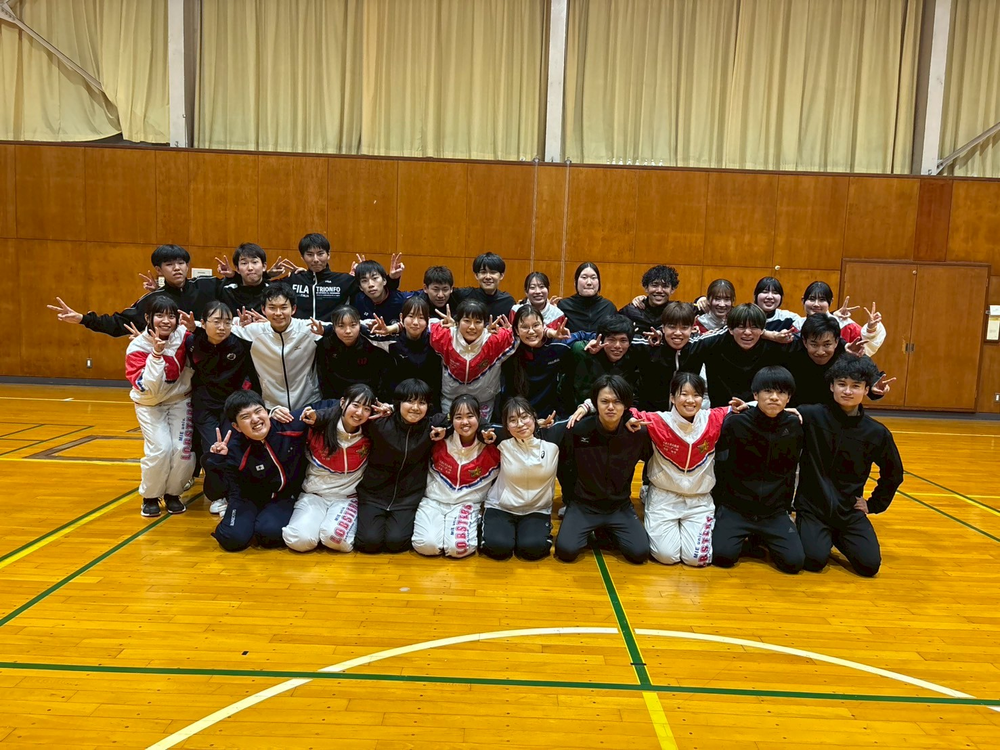

【団長 兼 リーダー部長 兼 リーダー部応援企画責任者 兼 リーダー部練習責任者】桂 大貴
大阪府私立帝塚山学院泉ヶ丘高等学校
工学部総合工学科応用化学コース
【主務 兼 翠ヶ丘会連携責任者】水野 颯士
愛知県私立南山高等学校男子部
生物資源学部共生環境学科
【副団長 兼 リーダー部総務 兼 リーダー部ステージ責任者】玉田 陽平
岐阜県立可児高等学校
工学部総合工学科電気電子工学コース
【ブラスバンド部長】藤井 理彩子
愛知県私立南山高等学校女子部
工学部総合工学科建築学コース
【チアリーダー部長】魚谷 実咲
三重県立桑名高等学校
教育学部学校教育教員養成課程音楽教育コース初等教育選修
【副務】水澤 日女香
三重県立神戸高等学校
人文学部文化学科
【副務 兼 チアリーダー部ステージ責任者】山田 小道
長崎県立長崎北陽台高等学校
工学部総合工学科建築学コース
【ブラスバンド部総務 兼 ブラスバンド部ステージ責任者 兼 ドラムメジャー】古屋 琢人
三重県立松阪工業高等学校
工学部総合工学科電気電子工学コース
【チアリーダー部総務 兼 新人勧誘責任者 兼 チアリーダー部応援企画責任者】岩松 里奈
北海道立札幌東高等学校
工学部総合工学科建築学コース
【会計責任者】岡田 美紀
岐阜県立大垣北高等学校
人文学部法律経済学科
【新人勧誘責任者 兼 広報制作責任者 兼 リーダー部新人監督】平松 那菜
岡山県倉敷南高等学校
人文学部文化学科
【新人勧誘責任者 兼 ブラスバンド部観客動員対策責任者 兼 ブラスバンド部応援企画責任者】大森 悠生
岡山県立岡山操山高等学校
工学部総合工学科応用化学コース
【リーダー部観客動員対策責任者】山村 優人
三重県立四日市西高等学校
工学部総合工学科機械工学コース
【チアリーダー部観客動員対策責任者 兼 広報制作責任者】地主 優音
愛知県私立南山高等学校女子部
医学部医学科
【ブラスバンド部応援企画責任者】稲垣 颯太
名古屋市立菊里高等学校
生物資源学部共生環境学科
【チアリーダー部新人監督 兼 トレーニングチーフ】古賀 陽花
愛知県立明和高等学校
工学部総合工学科建築学コース
【指揮】保村 実里
三重県立津西高等学校
人文学部文化学科
上に戻る
準幹部

＜リーダー部＞
小笠原照弥(工・機械工学)/東出壽一朗(教・英教)/武藤光(生・農林)
＜ブラスバンド部＞
阿加井 淳大(工・電気電子)/糸見 晃来(医・医)/奥平 禎大(工・電気電子)
木下 心晴(人・法律経済)/黒川 美桜(人・文化)/榊原 大生(工・電気電子)
坂本 十桜子(人・文化)/髙橋 陽菜詩(人・法律経済)/張 悠然(生・海洋生物資源)
鶴間 仁那(人・文化)/ハシミ ワイズ(工・情報工)/原 有桜(生・生命科学)
古田 奏帆(人・文化)/三谷 和暖(人・法律経済)森 舞衣弥(生・生命科学)
山田 莉央(人・文化)
＜チアリーダー部＞
安達智実(教・数教)/大橋礼奈(生・生命科学)
西村 汐織(生・農林)
二年生

＜リーダー部＞
有田伊織(工・情報工)/菅野圭祐(生・生命科学)
芹澤琢海(工・機械工)/中塚雄哉(工・電気電子)
平井和貴(人・文化)/堀田和来(工・応用化学)/森川瑛太(工・応用化学)
＜ブラスバンド部＞
石毛啓太(工・情報工)/和泉陽葵(人・文化)/井上幹都(工・情報工)
大崎瑶代(医・看護)/角田勇登(工・機械工)/川口蒼空(生・総合科学)
高橋奈々子(医・医)/髙橋勇磨(工・建築)/手嶋大智(工・応用化学)
遠山紗希(生・生命科学)/野村花乃(医・看護)
長谷圭悟(生・総合科学)/藤田愛子(生・農林)/堀木優来(教・音楽)
前田壮良(工・電気電子)/森家千晴(工・建築)
＜チアリーダー部＞
石黒絢葉(工・応用化学)/伊藤百恵(工・応用化学)/戎本ひなの(工・応用化学)
竹内潤(医・看護)/田中柚らら(工・建築)/中田春瑠(教・美術)
西原万結(工・機械工)/藤嶋紗也花(生・農林)
一年生
＜リーダー部＞
＜ブラスバンド部＞
＜チアリーダー部＞
上に戻る